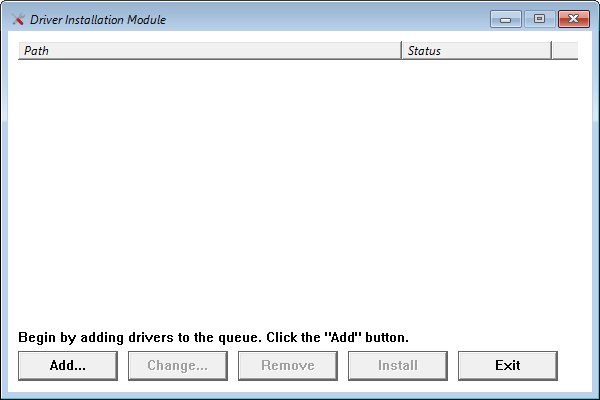

Driver Installation Module
The Driver Installation Module (DIM) is a quick and easy way of adding device drivers to booted Windows Preinstallation Environments:

While full functionality is achieved with the DISMTools Preinstallation Environment, you can still use the DIM in every Preinstallation Environment. This is compatible with the x86, amd64, and arm64 architectures.
NOTE: arm64 support for the DIM arrived in version 0.6.2.
Usage
-
Click the "Add" button and choose between a single driver file or an entire folder
- If you choose a folder, the Driver Installation Module will perform a recursive scan for INF files. This may pick up invalid INF files you may have
-
Perform any changes with the "Edit" and "Remove" buttons
- Click the "Install" button and let the program add the drivers
After driver installation, you will see an installation summary:

Later, after applying your Windows image, the Preinstallation Environment Helper will add those drivers to the target image.
Practical use: computers with third-party disk controllers
A practical use of the Driver Installation Module is to add compatibility for disk controllers that are not shipped with Windows PEs by default. This is the case if the test system is relatively new.

Here's how you can proceed:
-
Boot to a live Linux environment and use the partition manager that may come with it to grab the model of the desired drive. If you don't have a Linux ISO available, we recommend GParted Live for its simplicity and its small size

-
Additionally, you may want to get information about the model of the computer. In most Linux systems, you can run
sudo lshwin the terminal
After getting the model of the computer, go to the computer manufacturer's website to download compatible drivers. Make sure that you extract them and that you DON'T install them to your system by accident. After that, copy the drivers to wherever you want
-
Open the Driver Installation Module, add the folder containing the drivers and click Install

-
Check disks once again